Back to step-by-step lessonsAminate: all lessons
Open a tool to read its steps. This page needs no JavaScript.
01 · Quick Start
Find a tool for the job you want to do.
Before you start
Open Maya and Aminate. Save your scene before testing tools.
Try it in Maya
- Type a job, such as foot sliding or draw notes.
- Pick a tool and read what it does.
- Click Open Tool. Use Help inside any tool for its steps.
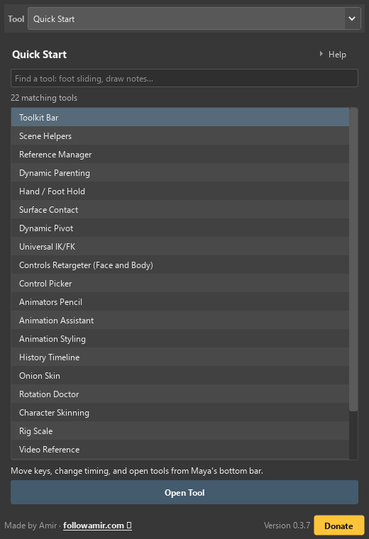
What you should see
The tool you chose opens in Aminate.
If it looks wrong
Clear the search and try one word, such as foot.
Main buttons
- Open Tool
- How to use it
- Open Tutorials + FAQ
02 · Toolkit Bar
Move keys, change timing, and open tools from Maya's bottom bar.
Before you start
Save your scene. Try changes on a short frame range first.
Try it in Maya
- Select the animated controls or keys.
- Point at a button to see its name and steps.
- Check the timeline before moving on.
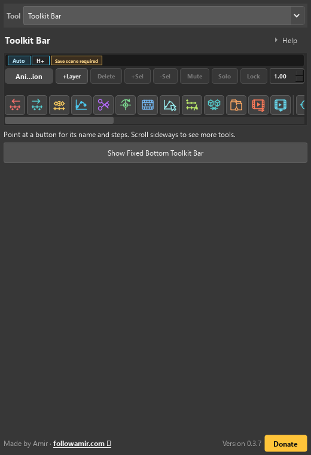
What you should see
The button gives a short status message, the correct pose or file changes, and the Toolkit Bar stays fixed at Maya's bottom edge.
If it looks wrong
If nothing happens, check the selection and frame. If the bar looks cut off, scroll it sideways instead of shrinking Maya's buttons.
Main buttons
- History Auto
- History Timeline
- Animation Layer menu
- + Layer
- Delete Layer
- + Selection
- - Selection
- Mute
- Solo
- Lock
- Layer Weight
- Nudge Left
- Nudge Right
- Insert Inbetween
- Tween Machine
- Cut Current Key
- Reset Pose
- Bake On Twos
- Select Animated
- Clean Static Keys
- Combine Freeze Pivot
- Package Scene
- Playblast 1080p AVI
- Export Selected Animation FBX
- 23 Aminate tab buttons
- Game Animation Mode
History and animation layers
These controls protect versions and organise animation without changing the character rig.
- History Auto
- When this is on, Aminate can make History Timeline checkpoints while you work. Turn it on only when you want automatic snapshots.
- History Timeline
- Open the list of saved checkpoints so you can compare or restore an earlier scene state.
- Animation Layer menu
- Choose which Maya animation layer you are editing.
- + Layer / Delete
- Make a new animation layer, or delete the chosen layer. Delete affects the layer, so check its name first.
- + Selection / - Selection
- Add selected controls to the layer, or remove them from it.
- Mute / Solo / Lock
- Mute hides a layer's effect. Solo shows only that layer. Lock stops accidental changes.
- Layer Weight
- Choose how strongly the layer changes the final pose. 0 means no effect; 1 means full effect.
Quick action icons
These buttons change keys, poses, meshes, packages, or exports.
- Nudge Left / Nudge Right
- Move selected keys exactly one frame earlier or later.
- Insert Inbetween
- Add a new key on the frame where the Time Slider is standing.
- Tween Machine
- Blend between the key before and the key after. 0% copies the first; 100% copies the next; 50% is halfway.
- Cut Current Key
- Remove keys only on the current frame for the selected controls.
- Reset Pose
- Set selected controls to translate 0, rotate 0, and scale 1. If Auto Key is on, the reset is keyed.
- Bake On Twos
- Bake selected controls over the visible playback range with a key every two frames.
- Select Animated
- Find and select transforms in the scene that already have animation curves.
- Clean Static Keys
- Remove animation curves whose keyed value never changes.
- Combine Freeze Pivot
- Join selected meshes, freeze transforms, and enter Maya's Edit Pivot mode.
- Package Scene
- Save the scene and collect references, textures, image planes, audio, and caches into a zip.
- Playblast 1080p AVI
- Make a 1920x1080 AVI of the visible playback range in your Documents folder.
- Export Selected Animation FBX
- Export only what you selected. It keeps the original source keyframe times by default, with an explicit optional whole-frame resampling checkbox, and leaves cameras and lights off by default.
Aminate tab buttons and Game Mode
The small workflow icons jump to every Aminate tab. The separate Game button changes useful Maya scene settings for game animation.
- 23 workflow icons
- Quick Start, Toolkit Bar, Scene Helpers, Reference Manager, Dynamic Parenting, Hand / Foot Hold, Surface Contact, Dynamic Pivot, Universal IK/FK, Controls Retargeter, Control Picker, Animators Pencil, History Timeline, Onion Skin, Rotation Doctor, Character Skinning, Rig Scale, Video Reference, Timeline Notes, Smear Frames, Customization, and the other current Aminate workflow tabs.
- Game Animation Mode
- Turns on the game setup choices selected in Scene Helpers. Read the Game Animation Mode subsection below before using it.
03 · Scene Helpers
Set up cameras, textures, key snapping, and other scene helpers.
Before you start
Save your scene. Try changes on a short frame range first.
Try it in Maya
- Find the job: keys, camera, textures, or rendering.
- Select the objects or frames that job needs.
- Click the helper. Read the result at the bottom.
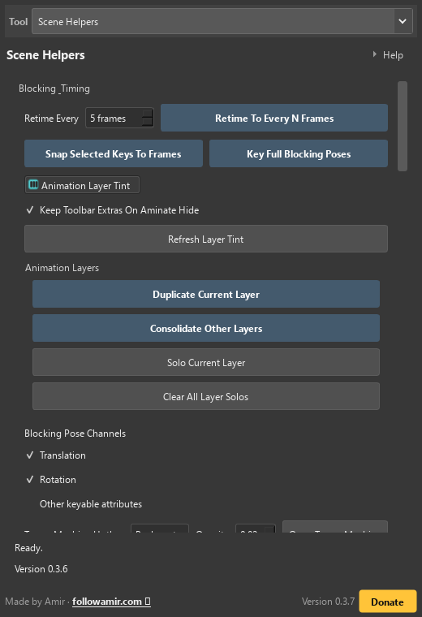
What you should see
You get one clear result: keys snap, a camera setup appears, Game Mode turns on, a floating editor opens, or a text note appears beside the character.
If it looks wrong
If the wrong thing changes, undo once and check the selection and tick boxes. Empty tick boxes tell Aminate to leave that part alone.
Main buttons
- Auto Key
- Auto Snap To Frames
- Game Animation Mode
- 7 Game Mode tick boxes
- Snap Selected Keys To Frames
- Key Full Blocking Poses
- Translation
- Rotation
- Other keyable attributes
- Retime Every N Frames
- Animation Layer Tint
- Keep Toolbar Extras On Aminate Hide
- Load Textures
- Open Last Autosave
- Disable Maya Security Popups
- Set Up Render Environment
- Delete Render Environment
- Teacher Demo tools
- Camera Preset and offsets
- Tween Machine hotkey and opacity
- Floating Channel Box
- Floating Graph Editor
- Create Text Note
- Auto Wrap
- Key On
- Key Off
- Move To Selected
- Apply Style
- Delete Note
Game Animation Mode
This is a setup button, not an animation style. It applies only the choices that are ticked.
- 30 fps
- Changes Maya's time unit to 30 frames per second, which is common for games.
- Realtime
- Makes Maya try to play the animation at its real speed instead of racing through every frame.
- Update All Views
- Makes Maya refresh every viewport while the animation plays.
- Autosave
- Turns on Maya autosave and keeps five backup files.
- Activate Focused Viewport
- Makes the viewport you are working in the active viewport.
- Load Textures
- Refreshes and repaths texture files that already exist on the computer.
- Weighted Tangents
- Converts animation curves to weighted tangents so handles can have different lengths.
- Important: turning Game Mode off
- The button stops showing as active, but it does not undo the Maya settings it already changed. Change those settings manually if you want the old setup back.
Blocking and timing tick boxes
These choices decide which animation channels the blocking helper keys.
- Translation
- Tick this to key move X, Y, and Z on every shared blocking frame.
- Rotation
- Tick this to key rotate X, Y, and Z on every shared blocking frame.
- Other keyable attributes
- Tick this only when you also want scale, visibility, and unlocked custom controls keyed.
- Auto Key
- When on, Maya adds keys when you change an already animated value.
- Auto Snap To Frames
- When on, Aminate keeps timing changes on whole-number frames.
- Animation Layer Tint
- Shows the active animation layer with a tint above Maya's Time Slider.
- Keep Toolbar Extras On Aminate Hide
- Keeps the Toolkit Bar, Tween Machine, Floating Channel Box, and Floating Graph Editor visible when Aminate is hidden. Leave it empty if hiding Aminate should clear those helpers.
Blocking and editor buttons
Use these after selecting the controls that should change.
- Snap Selected Keys To Frames
- Moves selected keys from decimal times such as 12.4 to whole frames such as 12.
- Key Full Blocking Poses
- Adds keys on the shared blocking frames using the Translation, Rotation, and Other tick boxes above.
- Retime Every N Frames
- Spreads selected timing so each pose is the chosen number of frames apart.
- Duplicate / Consolidate / Solo layers
- Copy the current layer, combine other layers into a safe muted copy, solo the current layer, or clear all solos.
- Tween Machine
- Set its hotkey and transparency, then open the small inbetween slider near the cursor.
- Floating Channel Box
- Set its hotkey and transparency, then open a small floating channel editor for the selected control.
- Floating Graph Editor
- Set its hotkey and transparency, then open a floating Maya Graph Editor that avoids duplicates.
Scene setup and cameras
These buttons build or remove scene helpers. They do not change the original character mesh.
- Load Textures
- Ask Maya to refresh and repath texture files that are already available.
- Open Last Autosave
- Open the newest Maya autosave after a crash or mistake.
- Disable Maya Security Popups
- Turn off Maya's repeated script-security questions for trusted local work. Use this only when you understand the scene source.
- Set Up / Delete Render Environment
- Build or remove Aminate's cyclorama, cameras, sky light, and bookmarks.
- Duplicate / Delete Teacher Demo
- Make a separate demonstration copy of a rig, or remove every teacher-demo copy and its display layer.
- Teacher Demo Edit Log
- See which teacher-demo edits were recorded.
- Camera Preset / Switch View
- Choose Front, Side, or Three Quarter and look through that helper camera.
- Height, Dolly, and Rig Copy offsets
- Move all helper cameras up/down, closer/farther, or offset the demo rig copy together.
Scene Notes and Auto Wrap
Scene notes are real Maya text curves, so they save with the scene.
- Text, colour, and size
- Type the note, choose a readable colour, and set how large it should appear.
- Auto Wrap
- Tick this to split long text into several lines inside the width and height box.
- Box W / Box H / Apply Box
- Choose the note's world-space box size and apply it.
- Resize In Viewport
- Select the note's resize box so you can scale it directly in Maya.
- Create Text Note
- Make the note beside the currently selected control or body part.
- Key On / Key Off
- Make the note appear or disappear on the current frame.
- Move To Selected
- Move an existing note beside a newly selected control.
- Apply Style / Delete / Refresh
- Update the selected note's look, remove it, or rebuild the list of notes in the scene.
04 · Reference Manager
Put your saved scene and its needed files in one zip.
Before you start
Save the Maya scene once.
Try it in Maya
- Save the Maya scene.
- Click Refresh Needed Files. Check for missing files.
- Choose a folder, then click Package Scene To Zip.
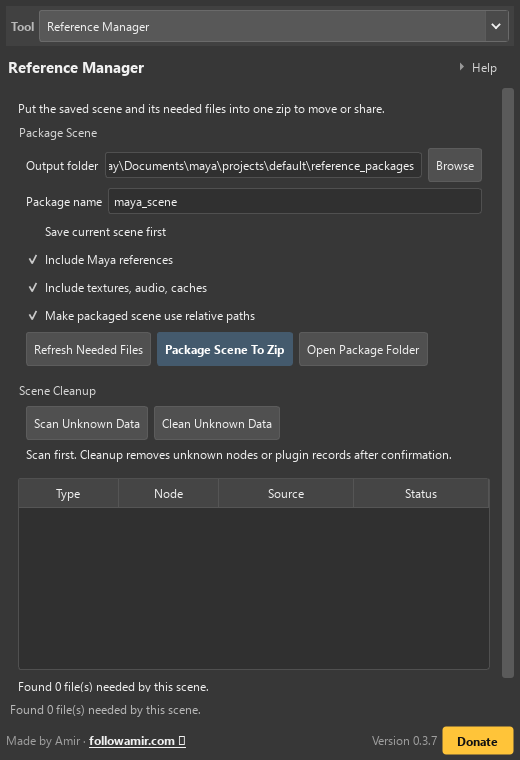
What you should see
A new zip appears with the scene, copied files, and a manifest that tells you what was found or missing.
If it looks wrong
If the zip is tiny or a file is missing, refresh again and fix the path before packaging. Packaging copies files; it does not repair a broken scene path.
Main buttons
- Refresh Needed Files
- Package Scene To Zip
05 · Dynamic Parenting
Make an object follow a hand, then let go without a jump.
Before you start
Pick the prop that changes hands, such as a phone, sword, or magazine.
Try it in Maya
- Select the moving object. Click Add Object.
- Select the hand or other target. Click Pick Parent.
- Choose a frame and target. Click Switch to this Parent.
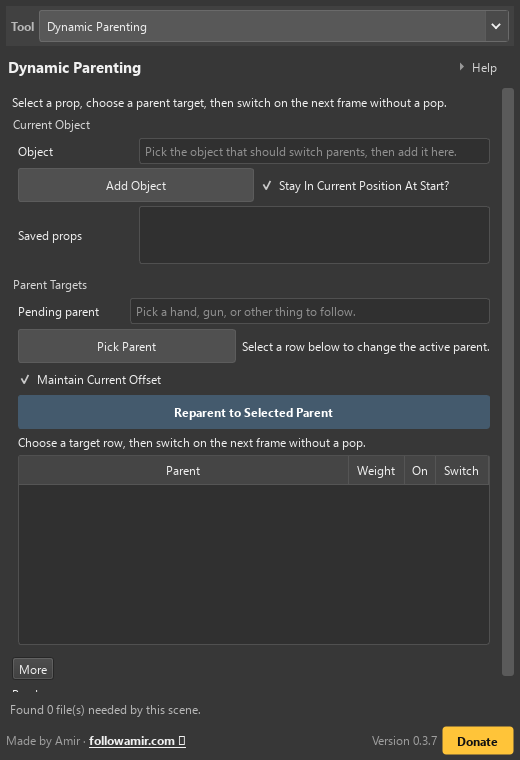
What you should see
The prop follows the new parent without a sudden jump.
If it looks wrong
A jump usually means the wrong parent or offset was saved. Undo, keep the current offset, and try the switch on a clean test frame.
Main buttons
- Add Object
- Pick Parent
- Snap To Parent
- Switch to this Parent
- World
- Fix Jumps
- Delete Picked Switch
06 · Hand / Foot Hold
Keep a hand or foot still while the character moves.
Before you start
Pick the hand or foot control and find the first touch frame and the lift-off frame.
Try it in Maya
- Select a hand or foot. Click Use Selected Control.
- Set the first and last frames. Choose which directions stay still.
- Click Save New Hold. Play the range to check it.
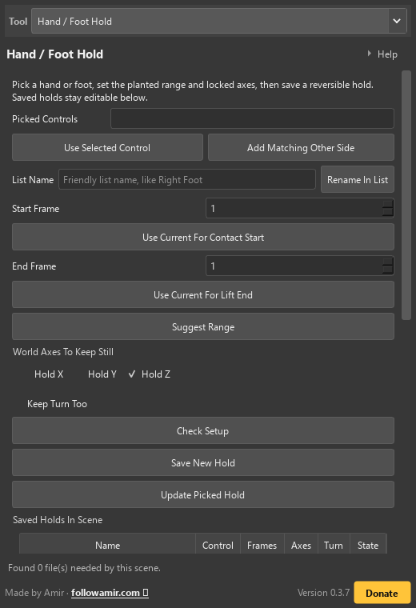
What you should see
The foot or hand stays planted while the rest of the body moves.
If it looks wrong
If the contact looks stiff, unlock an axis so it can slide or rotate naturally. A hold is a helper, not a promise that every footstep should be frozen.
Main buttons
- Suggest Range
- Use Current For Contact Start
- Use Current For Lift End
- Create / Update Hold
- Use Hold
- Use Original Motion
- Delete Hold
07 · Surface Contact
Keep hands, feet, or objects from passing through a surface.
Before you start
Pick the control that should touch something, then pick the mesh surface underneath it.
Try it in Maya
- Select the controls and floor meshes. Click Use Controls + Meshes.
- Set the frame range and gap above the surface.
- Click Check Setup, then Create / Update Collision.
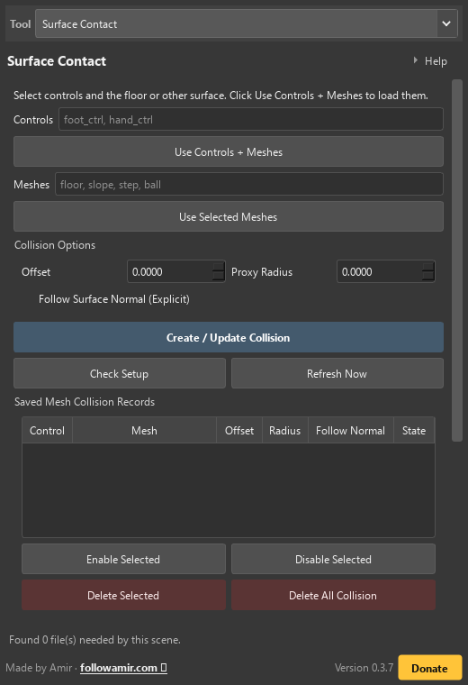
What you should see
The selected control sits on the mesh instead of floating above or sinking through it.
If it looks wrong
If the control snaps to a strange place, check that you selected the mesh, not a group or locator. Fix the selection and run Check Setup again.
Main buttons
- Check Setup
- Create / Update Contact
- Turn On Selected
- Turn Off Selected
- Key State
- Refresh Now
08 · Dynamic Pivot
Turn controls around a temporary point, such as a heel.
Before you start
Pick the controls you want to turn.
Try it in Maya
- Pick controls. Create a pivot marker and move it to the turning point.
- Highlight frames to change. No highlight means only the current frame.
- Rotate the marker, then use the turn button. Check the movement.
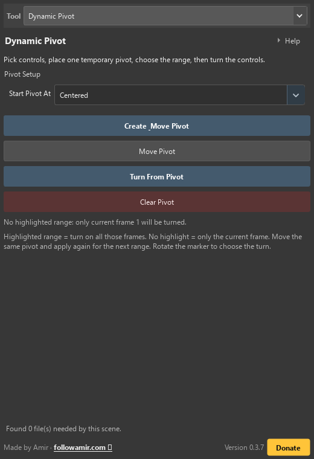
What you should see
Every whole frame in the highlighted range turns around the helper point.
If it looks wrong
If the turn is backwards, undo, rotate or move the marker, and try again. To use a new pivot later, move the same marker, highlight the later frames, and click Turn From Pivot again.
Main buttons
- Create & Move Pivot
- Move Pivot
- Turn From Pivot
- Clear Pivot
09 · Universal IK/FK
Switch an arm or leg between IK and FK without changing its pose.
Before you start
Pick the arm or leg controls and save a History Timeline step before a large switch.
Try it in Maya
- Pick one arm or leg. Click Set Up From Selection.
- Check its controls: IK moves the end; FK turns each joint.
- Save the setup. Switch to IK or FK and check the pose.
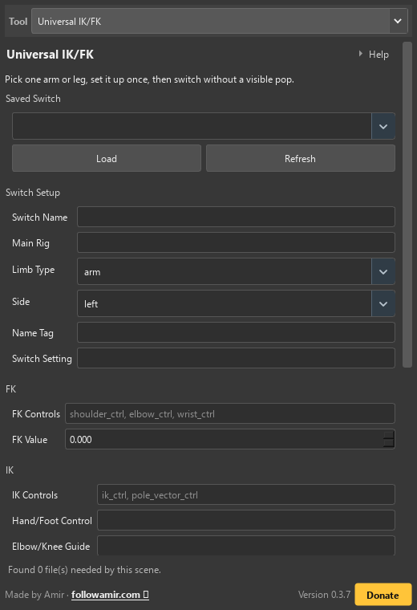
What you should see
The limb keeps almost the same pose while the keys change from one control system to the other.
If it looks wrong
If the pose pops, the saved control pair is incomplete. Pick the missing controls, save the switch again, and repeat on a test frame.
Main buttons
- Find From What You Picked
- Save Switch
- Switch FK -> IK
- Switch IK -> FK
10 · Control Rig Builder
Turn an imported skeleton into an editable control rig while keeping its existing skin.
Before you start
Save your scene and choose a clear reference pose before creating or transferring animation.
Try it in Maya
- Select the skeleton at its reference pose and click Scan selected skeleton / Auto-map.
- Review each role, assign uncertain joints, and add extra three-joint limb groups.
- Build the rig, then use Match and switch to IK or FK to animate. Add optional features after returning to the reference pose.
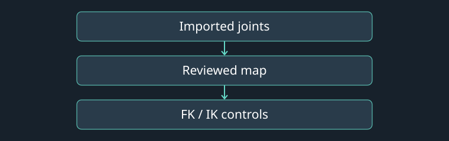
What you should see
Editable controls or a baked animation layer appear on the chosen target rig.
If it looks wrong
Check role assignments, reference poses, frame ranges and the status message if the operation stops.
Main buttons
- Scan selected skeleton / Auto-map
- Build control rig
- Match and switch to IK
- Apply rig feature
- Save pose
11 · Multi-Performer Mocap
Route several performers onto separate creature limbs and bake their combined movement onto one rig.
Before you start
Save your scene and choose a clear reference pose before creating or transferring animation.
Try it in Maya
- Import each performer FBX and choose the generated creature rig.
- Select source joints and assign them to a target limb group. Set a matching reference-pose frame and clip timing for each route.
- Create a baked preview, inspect the movement, then keep or discard the layer.
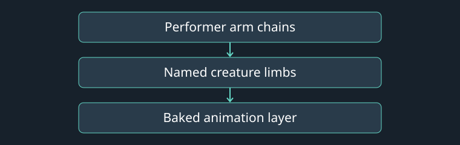
What you should see
Editable controls or a baked animation layer appear on the chosen target rig.
If it looks wrong
Check role assignments, reference poses, frame ranges and the status message if the operation stops.
Main buttons
- Import performer FBX
- Add selected source chain → target group
- Create baked preview
- Keep preview
- Bake composed mocap
12 · Controls Retargeter (Face and Body)
Copy movement from one character's controls to another character's controls.
Before you start
Have a source rig and a target rig in the scene.
Try it in Maya
- Load the controls to copy from on the left.
- Load the controls to copy to on the right. Check each pair.
- Click Check Setup, then Retarget All Controls. Play the result.
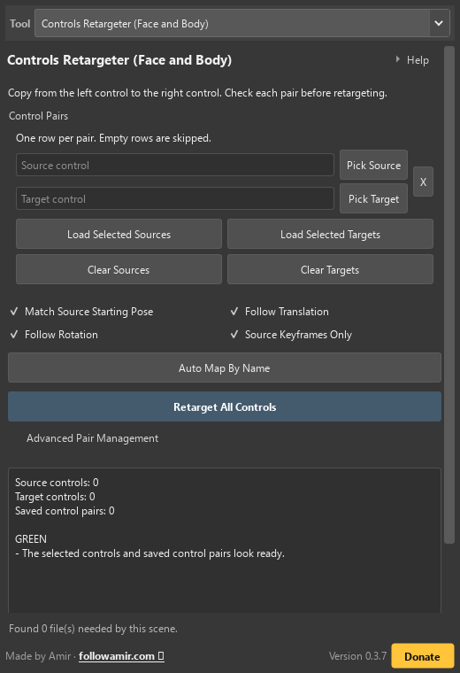
What you should see
The target matches the source pose on the first animated key, follows the source motion, and has no extra keys between the source keys.
If it looks wrong
If the target begins in its old T-pose, undo and make sure you used the repaired Match Source Starting Pose workflow. If it bends the wrong way, fix the pair row; Aminate cannot guess a missing or incorrectly paired control.
Main buttons
- Load Selected Source
- Load Selected Target
- Pair By Order
- Auto Map By Name
- Retarget Selected Controls
- Retarget All Controls
13 · Control Picker
Find and select a character's controls from a list or picture.
Before you start
Save a copy of the scene, then select the rig's highest control group.
Try it in Maya
- Select the character's top group. Click Scan Selected Rig.
- Click a body part to select its controls.
- Hold Ctrl or Shift to add more groups to your selection.
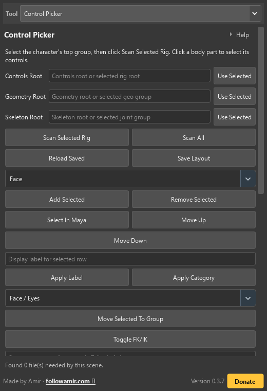
What you should see
A nested picker appears.
If it looks wrong
If Aminate misses a control, select that control in Maya and click Add Selected. If it is in the wrong group, select it, choose the right group, and click Move Selected To Group. If a saved set points at deleted controls, rescan and update that custom set.
Main buttons
- Scan Selected Rig
- Scan All
- Add Selected
- Remove Selected
- Move Selected To Group
- Create / Update From Selection
- Delete Custom Set
- Refresh Live Rig Map
- Key Selected Attrs
- Key All Attrs
14 · Animators Pencil
Draw on the view to plan poses or leave notes.
Before you start
Open the view you want to draw on. Choose a drawing layer.
Try it in Maya
- Choose a drawing tool and colour.
- Click Start Drawing, then drag in the view.
- Use layers to separate drawings. Press E to erase on the current layer.
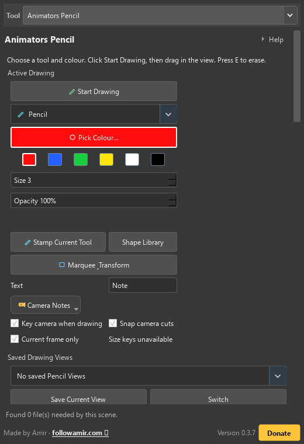
What you should see
Your marks are scene objects in a camera-specific layer.
If it looks wrong
If a mark is missing, switch back to its Saved Drawing View and layer. A locked layer cannot be erased until you unlock it.
Main buttons
- Start Drawing
- Saved Drawing Views
- Save Current View
- Switch
- RGB + Swatches
- Drawing Tools
- Shape Tools
- Rename
15 · Animation Assistant
Check whether a pose balances over the hands or feet touching the floor.
Before you start
Pick the floor or ground control and the controls that touch it.
Try it in Maya
- Load the floor and the control at the character's centre of weight.
- Add the hands or feet that can touch the floor.
- Click Refresh. Adjust the pose and check the balance guide.
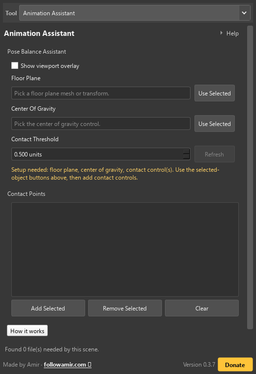
What you should see
The viewport shows a support area and a simple balanced or unbalanced badge.
If it looks wrong
If the badge says unbalanced, check the silhouette and acting too. The helper only measures the points you gave it.
Main buttons
- Use Selected
- Refresh
- Add Selected
- Remove Selected
- Clear
16 · Animation Styling
Hold poses for several frames to make stepped, stop-motion-style movement.
Before you start
Save a History Timeline step and select a small range of keys to test.
Try it in Maya
- Select controls and set how many frames each pose lasts.
- Click Scan Overlaps to check for keys that are too close.
- Click Hold Current Key or Hold Selected Existing Keys. Play the result.
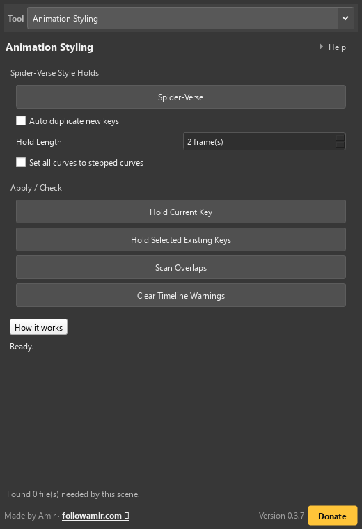
What you should see
Keys hold for the chosen number of frames and the warning area points out collisions before they surprise you.
If it looks wrong
A hold can cover a key you meant to keep. Start with a small range and use the warning list as your map.
Main buttons
- Apply Hold
- Set all curves to stepped curves
17 · History Timeline
Save scene copies you can return to. Restoring replaces the whole open scene.
Before you start
Save your scene. Try changes on a short frame range first.
Try it in Maya
- Save the scene first.
- Click Save Step. Use Save Milestone for a copy you want to keep.
- Save current work before restoring a snapshot; it replaces the whole scene.
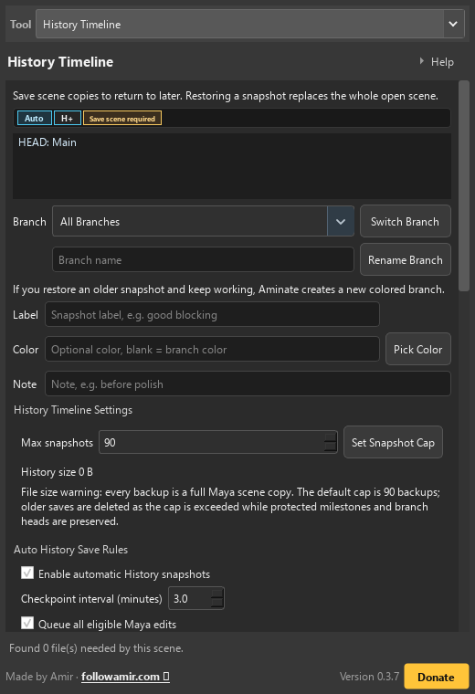
What you should see
A coloured history row appears and Restore returns the scene to that saved moment without deleting your current work first.
If it looks wrong
If a restore looks wrong, use the safety snapshot that Aminate made just before restoring. History is a safety net, not a replacement for saving the Maya file.
Main buttons
- Save Step
- Save Milestone
- Restore
18 · Onion Skin
See faint copies of earlier and later poses beside the current pose.
Before you start
Pick the rig or object you want to watch and save the scene if the rig is heavy.
Try it in Maya
- Select the animated mesh. Click Use Current Selection.
- Choose how far apart the earlier and later poses should be.
- Move through frames to compare poses. Clear the preview when finished.
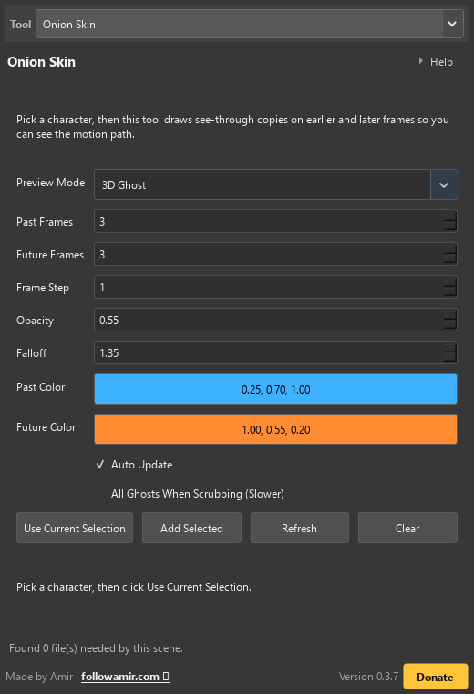
What you should see
See-through copies of past and future poses sit around the current pose, making spacing and arcs easier to compare.
If it looks wrong
Too many ghosts can slow a heavy rig. Use fewer ghosts or a larger frame step before doing more work.
Main buttons
- Attach Selected
- Frame Step
- Clear
19 · Rotation Doctor
Find and fix unwanted twists or flips in animated controls.
Before you start
Select only the animated controls with the rotation problem.
Try it in Maya
- Select the controls that twist or flip.
- Click Analyze Selected. Read the suggested fix.
- Click Use Best Fix. Play the changed frames to check them.
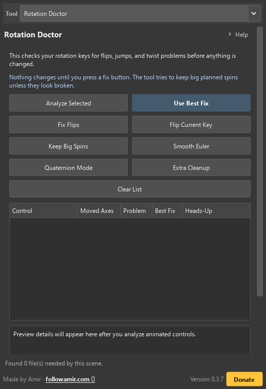
What you should see
The rotation curve no longer makes a surprise flip, and the report tells you what was checked.
If it looks wrong
Rotation fixes change keys. A History Timeline step makes it easy to go back if the artistic result is not right.
Main buttons
- Analyze Selected
- Use Best Fix
- Flip Current Key
20 · Character Skinning
Fix a character's transforms or copy how its skin follows the bones.
Before you start
Pick one skinned mesh.
Try it in Maya
- Choose Fix Skinning or Skin Transfer.
- For a whole rig, select its top group and click Copy Whole Character.
- For weight transfer, load source meshes and target meshes, then click Transfer Skin.
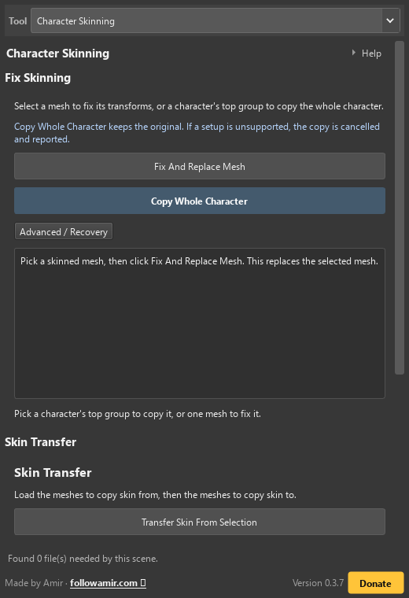
What you should see
The mesh keeps its skin and animation but has clean transform values.
If it looks wrong
If a check is red, stop and fix that problem first. Replace Original is the one action in this lesson that should never be rushed.
Main buttons
- Check Selected Mesh
- Make Frozen Copy
- Replace Original
- Delete Frozen Copy
- Copy Selected Pair Now
21 · Root Motion
Add root motion after animating the body while keeping its world-space performance.
Before you start
Use a saved scene with an editable root and editable direct child joints or transforms. Move to the offset reference frame inside the range.
Try it in Maya
- Pick the root bone or control and set Start and End. All its direct child transform branches will be preserved.
- Leave Follow source empty for freeform editing, or pick a bone or COG and tick Translation, Rotation and/or Scale. Maintain offset uses the current frame.
- Click Prepare independent root. Animate the selected root helper, then choose Authored keyframes only or Every frame and click Bake and finish.
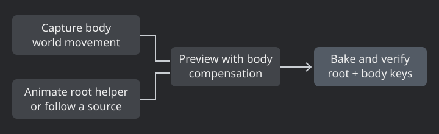
What you should see
The root helper changes the root path while the body follows its captured motion. Bake verifies the resulting world matrices at the selected sample times and removes its helpers.
If it looks wrong
Locked, constrained, driven-key or animation-layer channels on the root or direct children require an editable controller or baked export skeleton. Zero scale is rejected. If matrix verification fails, the bake is undone and the preview remains available.
Main buttons
- Prepare independent root
- Select root animation control
- Refresh sessions
- Bake and finish
- Cancel and restore original
Follow and offset
- Translation
- Copy the captured source position. With Maintain offset, retain the position difference at the reference frame.
- Rotation
- Copy the captured source orientation, optionally retaining the reference orientation offset.
- Scale
- Copy source scale through a scale constraint, optionally retaining the reference scale ratio. Matrices must stay invertible.
- Freeform
- Leave Follow source empty and key the temporary root helper. The body cache remains independent.
22 · Rig Scale
Make a bigger or smaller export copy. Keep the original rig unchanged.
Before you start
Choose the character and skeleton you want to export.
Try it in Maya
- Load the rig control and top skeleton joint.
- Set the size. 150% means one and a half times the original.
- Click Check Setup, then Make Copy. Export the copy when it looks right.
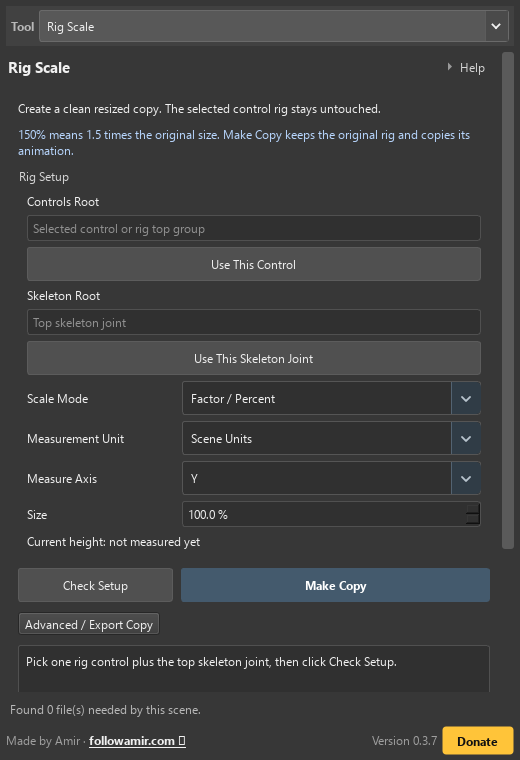
What you should see
A separate scaled group appears in the scene and the source rig stays as it was.
If it looks wrong
If the copy is the wrong size, delete the copy and make it again with a corrected multiplier. Never scale the original just to test an export.
Main buttons
- Use Selected Character
- Use Selected Skeleton
- Check Setup
- Make Export Copy
23 · Video Reference
Put a video or picture in the view to follow or trace.
Before you start
Have a video or image sequence and know the frame where it should start.
Try it in Maya
- Click Use Active View, then Pick Video / Images.
- Set where it goes, its size, and its first frame.
- Click Make Tracing Card. Move through frames to check the timing.
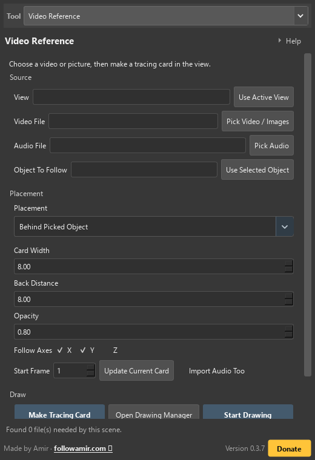
What you should see
The reference lines up with the Maya timeline, and the tracing card stays in the chosen view while you animate.
If it looks wrong
If the timing is off, change Start Frame on the existing card instead of making a second card.
Main buttons
- Use Active View
- Use Selected Object
- Make Tracing Card
- Open Drawing Manager
- Start Drawing
24 · Timeline Notes
Add coloured notes to frames so you can find them later.
Before you start
Highlight the frame range that the note belongs to and write the note in plain words.
Try it in Maya
- Set the first and last frames for the note.
- Write a short title and note. Choose a colour.
- Click Add Note. Move into those frames to see it.
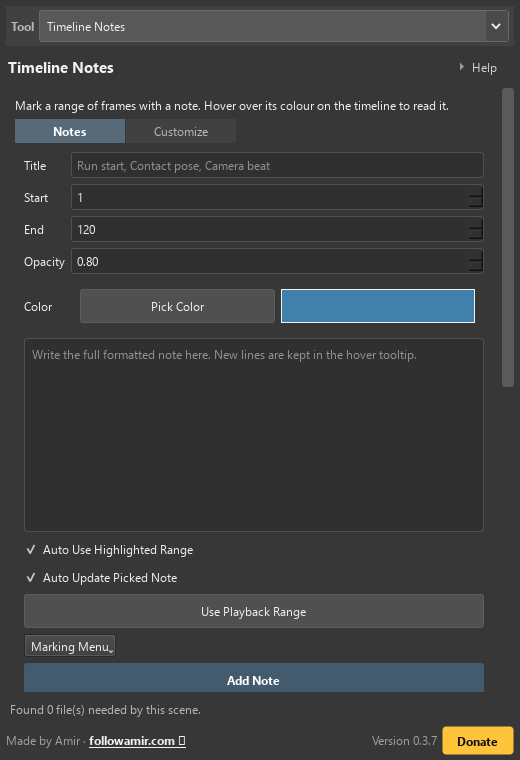
What you should see
A coloured range appears over the timeline and the note reader shows it at the matching frame.
If it looks wrong
Use a short title so the strip stays readable. The full note is still available when you hover or open the reader.
Main buttons
25 · Smear Frames
Make a stretchy motion shape. Edit it and choose when it appears.
Before you start
Save the scene and select one animated mesh.
Try it in Maya
- Select the animated mesh on the frame you want to stretch.
- Set the stretch amount. Click Create Smear.
- Edit the shape and its visible frames. Click Save Name And Frames.
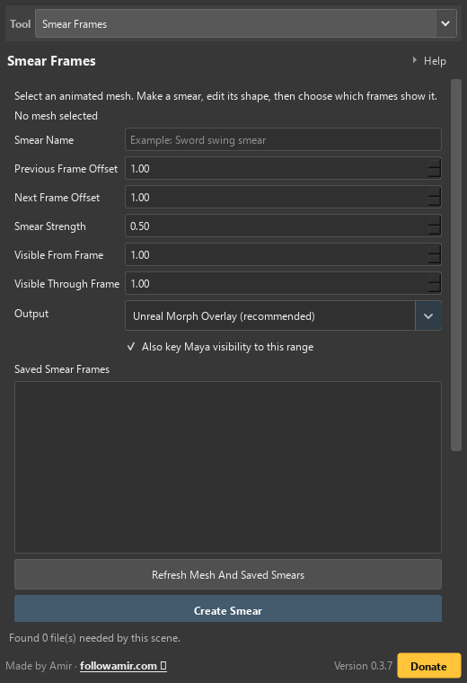
What you should see
The saved smear list remembers the name and frame range after saving and reopening Maya.
If it looks wrong
If the smear is too wild, undo and use smaller offsets or strength. If Unreal shows no morph, import the FBX as Skeletal Mesh with Import Animations and Import Morph Targets turned on.
Main buttons
- Refresh Mesh And Saved Smears
- Create And Save Smear
- Saved Smear Frames
- Select Saved Smear
- Sculpt / Edit Vertices In Viewport
- Finish Editing
- Save Name And Frame Range
- Export All Unreal Smears
- Delete Selected Generated Smear
What Aminate saves
Each saved item keeps enough information to return after the Maya scene is reopened.
- Name and unique ID
- A human name for the list plus an internal ID so two smears can have similar names safely.
- Source and sample frames
- The mesh Aminate sampled and the previous/current/next frames used to calculate motion.
- Visible range
- The first and last frame where the smear should be on.
- Editable target
- A topology-matching mesh whose vertices you can move with Maya's normal modelling tools.
- Unreal carrier
- A one-joint skeletal overlay with blend shapes. Aminate remembers the source rig's scale, so a vertex you move by 3.5 cm stays a 3.5 cm edit. The joint shrinks the overlay almost to zero outside your chosen frames, then returns to the captured scale during the smear.
- Visible From Frame
- The first frame where the saved smear shape appears.
- Visible Through Frame
- The last frame where the saved smear shape appears.
Why the Unreal export works
FBX visibility animation is not a dependable way to turn a mesh on and off in Unreal, so Aminate uses morph curves instead.
- Before the range
- Morph weight is 0, so the overlay shrinks too small for the player to see.
- Inside the range
- Morph weight is 1, so the sculpted smear appears.
- After the range
- Morph weight returns to 0 and the overlay disappears again.
- FBX bundle
- The FBX contains geometry, one root joint, skinning, blend shapes, and baked animation. The JSON records FPS, units, axis, names, and ranges.
- Unreal import
- Import as Skeletal Mesh with animations and morph targets. Play the smear overlay animation at the same time as the character animation.
26 · Customization
Choose Aminate's theme, animation colours, and toolbar tooltip size.
Before you start
Take a screenshot of the current look or remember the Reset button.
Try it in Maya
- Choose a theme to change Aminate's look.
- Pick animation colours, then click Apply Colors.
- Use Reset Colors to return to the default animation colours.
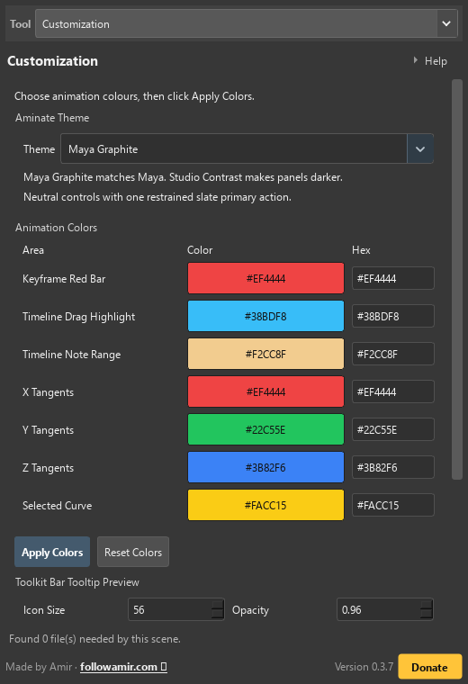
What you should see
The selected Aminate accents update while neutral panels stay dark and readable.
If it looks wrong
If a colour hides text or makes a normal button look dangerous, reset it and choose a calmer colour with more contrast.
Main buttons
Help
Where do I open the tutorials?
Click Open Tutorials + FAQ in Aminate's Quick Start tab, or open tutorial.html beside the release installer. The installed route remains Aminate/docs/index.html.
Will this guide work without internet?
Yes. The tutorial page, styles, JavaScript, screenshots, GIFs, and videos are local files. Links such as followamir.com are optional extras.
Why can I not find Smear Frames or Customization?
They are the last two main tabs in the current 23-tab Aminate window. Scroll the tab strip or use the search box in this guide.
Does turning Game Animation Mode off undo its settings?
No. Off only changes the button state. The 30 fps, realtime, viewport, autosave, textures, and weighted-tangent settings already applied stay in Maya until you change them again.
How do Smear Frames reach Unreal Engine?
Use Unreal Morph Overlay, sculpt without adding or deleting vertices, save the range, then click Export All Unreal Smears. Import the FBX as a Skeletal Mesh with Import Animations and Import Morph Targets turned on. The bundle also includes a JSON manifest, an Unreal Python helper, and a plain-text guide.
What should I do before a risky button?
Save the Maya scene and make a History Timeline step. That gives you a clear way back if the result is not what you wanted.
A button did nothing. What now?
Read the before-you-start box, check the selection, then run the small setup or refresh button shown in that lesson. Most tools need the right object selected first.
Can I use the GIFs in class?
Yes. They are local teaching examples. Pause a GIF or use the controls on a video to watch one small action at a time.
Why is a screenshot labelled narrow?
It is a real narrow-window capture. It shows how the tab reflows on a small laptop or phone-sized view; it is not a promise that every Maya window is that exact width.
How do I return to the normal installed docs?
Open Aminate/docs/index.html. The release-root tutorial.html is a handoff shortcut to the same payload docs, not a second installed docs route.